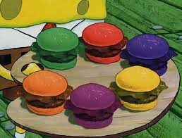

Colored Cheese Burger Recipe

The mystery burger that will taste different each time (food coloring may or may not be the reason for this)
Ingredients
- 8 oz of Ground Beef
- 1 Slice of American Cheese
- Burger Bun
- Salt
- Pepper
- Optional Toppings: Lettuce, Tomato, Onions, Pickles,
Ketchup, Mustard, Mayonaise
- Food Dye
Instructions
- Heat grill or skillet and prepare patty with salt and pepper
- Cook patty 3-4 mins each side
- Add cheese slice at the last minute of cooking
- Toast burger buns
- Assemble burgers with cooked patties on toasted buns, add additional toppings
- Douse the burger in the chosen dye color